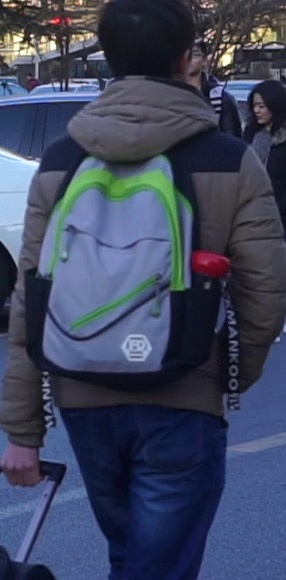

Figure 2
What the model learns from, and how it is graded
RSTPReid · 20,505 photos · 4,101 people(a) one person, five cameras, two descriptions per photo


Written for the cam 7 photo
#1“The man is wearing a red coat, black trousers and black shoes. He is wearing glasses. He was looking at his cell phone when he was walking.”
#2“The man is wearing a dark red top with the hood. He wears black pants and a pair of black sneakers …”
The same coat looks red, dark red or almost black depending on the camera and the light. The model has to learn that these are one person.
(d) two test protocols, and when each is fair
| Protocol | Queries | Gallery | Valid for |
|---|---|---|---|
| A · test split | 2,000 | 1,000 | every model. This is the headline number |
| B · whole dataset | 41,010 | 20,505 | zero-shot only |
After fine-tuning, protocol B would include photos that the model trained on, so it would grade the model on its own homework. Fine-tuned results therefore use only test, or val and test pooled.
(b) split by person, so no one in the test set is ever seen in training
0person ids4,101
| Split | People | Photos | Descriptions | Used for |
|---|---|---|---|---|
| train | 3,701 | 18,505 | 37,010 | learning (fine-tuning) |
| val | 200 | 1,000 | 2,000 | choosing the best checkpoint |
| test | 200 | 1,000 | 2,000 | the reported numbers (protocol A) |
(c) the grades, in plain words
Rank-1
Is the very first photo the right person?
1

2

3

4

5
Rank-5 / Rank-10
Is the right person anywhere in the first 5 (or 10)?
More forgiving than Rank-1. This is what a human scanning a short list would see.
mAP
Are all five photos of the person near the top?
1
2
3
4
5
mINP
How far down is the hardest photo of the person?
The strictest grade: one photo buried at rank 400 pulls it down even when the first four are perfect.
Figure 2. (a) RSTPReid gives every photo two English descriptions written by different people, and every person is seen by about five cameras. (b) The splits do not share any person, so test scores measure how well the model handles strangers rather than how well it remembers training people. (c) Each of the 2,000 test descriptions searches all 1,000 test photos. Rank-k asks "was the right person in the top k?". mAP and mINP also ask how many of that person's photos were found, and how deep the last one was buried.